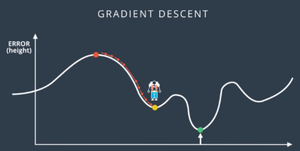
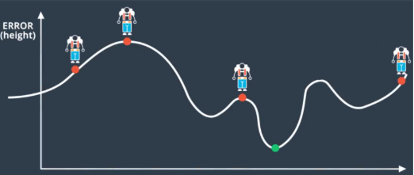
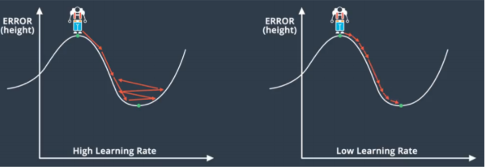
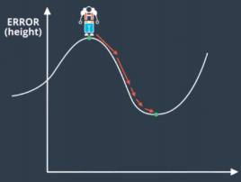
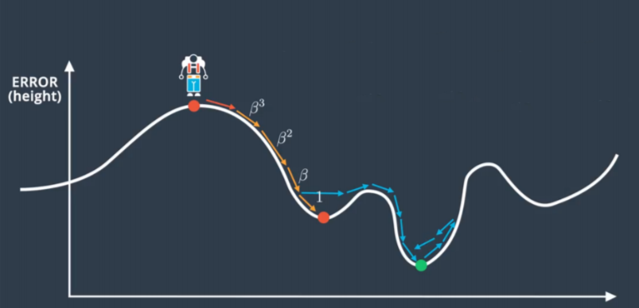

(Local_Minima_Trap) =
Chapter 17 – Local Minima Trap¶
The gradient descent approach has the biggest disadvantage: it can be trapped into a local minimum instead of reaching a global minimum. As the following figure shows, we will definitely be trapped in a local minimum if we start off from the left.
There is a simple solution to this, we train the model multiple times with different starting weights (i.e. starting off from different positions in figure 1.33). The more we repeat and train, the more likely we will find the global minimum or local minimum that is low enough.
Dynamic Learning Rate¶
If we keep the learning rate (step size) the same, we will have two problems. First, if the learning rate is too high, then it is hard to converge at the minimum and the error would increase (getting out of the minimum) after it declined.
Second, if we use a very low learning rate, then it will take ages for it to converge. The epoch/iteration will be huge and so is your electricity bill.
One way to solve this problem is that we can adjust the step size or learning rate dynamically. We can use big step size when the gradient is large and far away from the minimum and slow down the learning rate at the bottom of the minimum.
Finally, we can use the idea of `momentum’ to avoid to be trapped in the local minimum.
\begin{equation} Step(n)^{‘} = Step(n) + \betaStep(n-1) + \beta^2Step(n-2)+… \end{equation} where \(\beta\) is a constant between 0 and 1.
